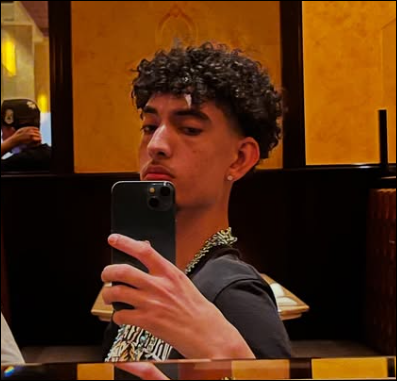

My name is Jaedan DeSimone and I am from Cape Cod, Massachusetts. Im a student at NEIT and am in the cyber security major. Web development and coding arent my strong suit, however, I still enjoy being able to overcome the challenges of coding and being able to make things with code. My true passion is for content creation as I have a youtube channel of my own and upload many types of videos. I vlog, play video games, make biblical christian videos, etc. One day I hope that my content reaches an audience of people who enjoy watching my videos and they are able to laugh and make their day better from them. I also grew up christian and try to be very involved in my church and I am a leader in my youth group. Unfortunatley, I havent been able to contribute much time to my youth group because I live on campus and dont spend too much time at home.
The schools ive gone to are:
The Hobbies that I enjoy are:
Heres a link to my channel! Youtube.com/JaeTD